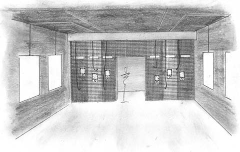
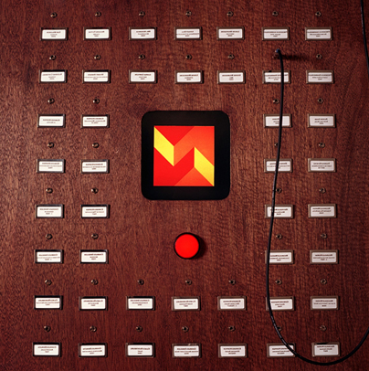
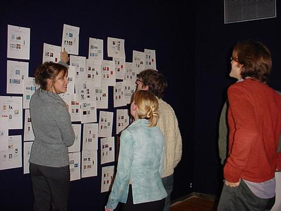
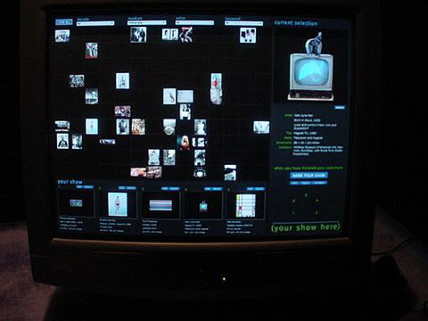
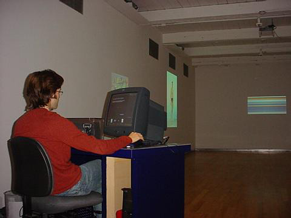

|
As an art form that is by nature hybrid and participatory, new media has a profound influence on the roles of the curator, artist, audience, and institution. Curators have to increasingly work with the artist on development and presentation of the work. The artist often becomes a mediatory agent and facilitator-both for collaboration with other artists and for audiences’ interaction with and contribution to the artwork. The public and audience often turns into a participant in the artwork-a notion that runs counter to our idea of the museum as a shrine for contemplating sacred objects. All of these issues require that art institutions, at least to some extent, reconfigure themselves and adapt to the demands of the art. In terms of the changes that all of these traditional roles are undergoing, the notion of collaboration is the key concept for alternative models.
The necessity of a closer collaboration between curators and artists is mainly due to both the development process of the work-which may be a collaboration between several artists in the first place-and its presentation within the physical space. If one presents new media art within the museum space, it is always recontextualized and often reconfigured. One characteristic of new media art is a fluent transition between the different manifestations that a “virtual object” can take: the same work might be shown, for example, as an installation, projection, or within a kiosk set-up. Ultimately, the physical environment should be defined by what an artwork requires and it may be important to establish a connection between the physical and virtual space. Digital technologies make us reconsider our traditional notions of space and architecture, and many efforts are currently being made to translate the characteristics of virtual spaces and information architecture into physical space. A virtual / physical museum would have to be a parallel, distributed, living information space that is open to artistic interference-a space for exchange, collaborative creation and presentation that is transparent and flexible. The decisions that need to be made in establishing these connections ultimately have an effect on the aesthetics of the work and ideally should be the result of a collaboration between the curator and artist.
The collaborative model also is a crucial concept when it comes to the artistic process itself. Apart from the fact that new media works often require a complex collaboration between artists, programmers, researchers, scientists (whose role may range from that of a consultant to a full collaborator), there also are works where an artist establishes a framework in which other artists create original works. Lisa Jevbratt’s Mapping the Web Infome and Alex Galloway’s Carnivore would be perfect examples of this process. In these cases, artists set certain parameters through software or a server and invite other artists to create “clients,” which in and of themselves again constitute art works. The initiating artist starts to play a role similar to that of a curator, and these collaborations are often the result of extensive previous discussions (sometimes on mailing lists specifically established for this purpose). Showing these types of work within a museum context may lead to yet another level of curatorial “intervention.” Collaboration is inherent to the networked digital medium and an important element in multi-user environments (for example, 3D worlds that rely on their inhabitants to extend the world and create dwellings) and gaming (for example game patches).
Obviously, many new media projects are ultimately created by audience input. While the artists still maintain a certain (and often substantial) control over the visual display, works such as Mark Napier’s P-Soup, Andy Deck’s Open Studio
or Martin Wattenberg’s and Marek Walczak’s Apartment would all consist of a blank screen if it weren’t for audience participation. When it comes to involvement in the curatorial process, however, the audience still is a neglected element in the equation. With its inherent flexibility and possibilities for customization, the digital medium potentially also allows for an involvement of the audience in the curatorial process.
The idea of “public curation” currently still is in the experimental stages but a growing number of websites is developing models for this form of collaboration-among them the site of the Graz Biennial on Media and Architecture, which creates spheres that are open to public input.
In the fall semester of 2001, the Interactive Telecommunications Program (ITP) at New York University, in conjunction with the Whitney Museum, devoted a class to the development of interfaces that would enhance the experience of visitors to the Whitney. One of the projects-“Connections” by Jon Alpert, Eric Green, Betsy Seder and Victoria Westhead-consisted of an interactive environment in which visitors could select works of the Whitney’s collection (most of which is never shown) and display them in the gallery. The “Connections Gallery” consists of three display walls with screens and one interaction wall, which uses the metaphor of the mechanical switchboard and consists of a grid of columns organized into categorized columns (each with a cable and small monitor). By plugging a cable into the socket corresponding to an image, visitors would make the artwork appear on the small monitor. If the visitor presses the launch button, the work will appear in one of the screens on the display walls. The project is also accompanied by a website that allows the same form of public curation and archiving.
MASS MoCA currently invites gallery visitors to use a curatorial software program that allows them to project their selections from over 100 digital images of 20th-century works of art onto the walls of the gallery. The project, (Your Show Here), was created by Tara McDowell and Letha Wilson (project coordinators), Chris Pennock (software design), Nina Dinoff, (graphic design) and Scott Paterson (information architecture). The software allows visitors to browse through the database of images, choose up to five, write a statement about their choices, and title the show. Through the interface visitors can filter works according to artist name, medium, date, and keyword. The digital images are instantly projected at the scale of the original objects just by clicking a button. While each show is replaced by that of the next visitor to navigate this program, a print-out of your curatorial decisions can be posted on the bulletin board near the gallery entrance. The virtual exhibition remains in the gallery only until the next participant "installs" his/her own choices but print-outs of the visitors curatorial decisions can be posted on a bulletin board at the gallery entrance.
Both projects use the possibilities of instant recycling, reproduction and archiving facilitated by the digital medium to propose an alternative model of presenting and viewing art that moves away from a traditional pre-scripted model. The art may take on new meanings in multiple contextual reconfigurations.
While some of the previously described models of “public curation” still consist of pre-defined archives, they blur the boundaries between public and curator, allowing for models that potentially could establish a more direct reflection of the demands, tastes and approaches of an audience. The reconfiguration of the roles of curator, artist, audience and museum that is brought about by new media will certainly meet some resistance and might not live up to its potential for quite some time. Ultimately, this reconfiguration is a reflection and microcosm of the potential of digital technologies themselves-an open-source model of the creation and presentation of art.

A sketch of the “Connections” gallery with display and interaction wall.

The “Connections” prototype at ITP with display monitor and a model of the interaction wall.

Detail of the “Connections” interaction wall with “image” sockets , cable and preview screen.

(Your Show Here). The bulletin board with print-outs of visitors’ shows and a plasma screen displaying information about the current show.

(Your Show Here). A screenshot of the main interface.

(Your Show Here). A filtered view of the artworks. Along the bottom of the interface are 5 containers holding the visitor's selected artworks. Their position corresponds to the gallery walls starting on the left and proceeding around clockwise.

(Your Show Here). A snapshot during installation showing the desk, computers and
printer situated in the gallery and facing the projections.
|